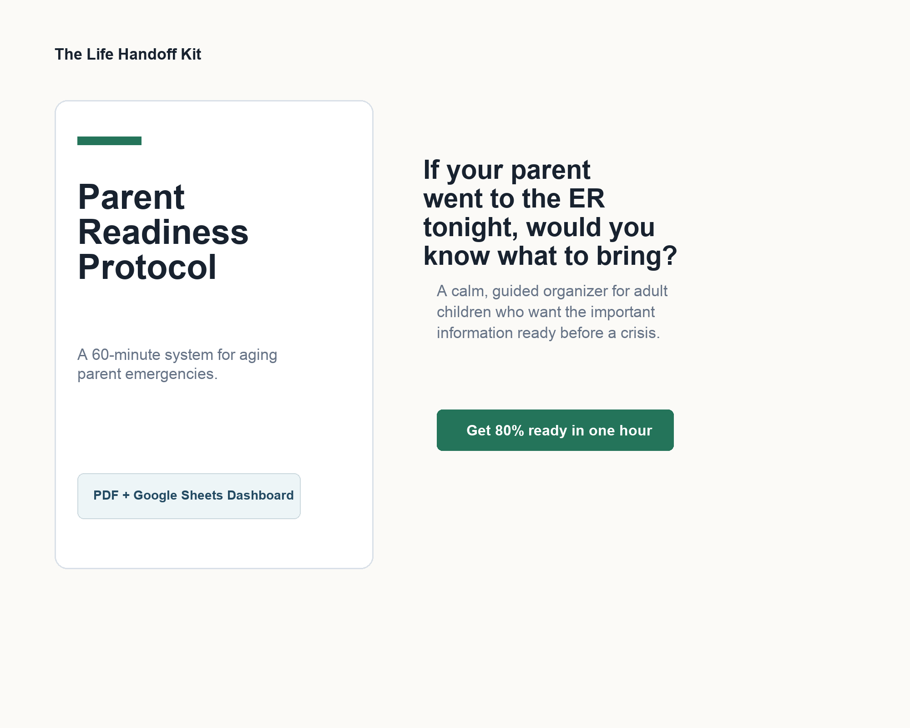

You know there are gaps.
Your parent has doctors, medications, insurance cards, bills, and documents, but no single place where the family can find the essentials.
The Life Handoff Kit
Get the most important medical, insurance, contact, and document details 80% organized in one focused hour.
Organize the medical, insurance, document, account, and contact details your family may need before everyone is rushed, stressed, or guessing.
For organization only. Not legal or medical advice. Your family data stays with you.

Start with the five details most likely to matter in an emergency.
See what is handled, what is missing, and what to do next.
Ask hard questions without making the moment feel cold or awkward.
Who this is for
Your parent has doctors, medications, insurance cards, bills, and documents, but no single place where the family can find the essentials.
You want to ask practical questions without turning one afternoon into a scary estate-planning talk.
Not perfection. Not a 100-page binder. Just a clear first pass your family can improve over time.
The problem
A hospital visit can turn simple questions into a scramble: What medications does Dad take? Who is the primary doctor? Where is the insurance card? Which bills need to be handled while Mom recovers?
Parent Readiness Protocol turns those loose details into a finishable first pass. Not a giant binder. Not a homework project. Just the information your family needs to find first.
Inside the kit
The launch kit is intentionally focused so a real person can open it, make progress, and feel clearer the same day.
Contacts, doctors, medications, insurance, document locations, bills, access strategy, who to call first, and a quarterly check-in.
A simple Google Sheets dashboard with a color-coded readiness score and the next three actions.
Calm language for asking a parent about medical information, documents, accounts, and emergency access.
Why it is different
Huge page counts, broad categories, and a lot of blank space to figure out.
Critical 5 first, a 60-minute flow, readiness score, and conversation scripts.
Less scrambling, fewer awkward starts, and one clear place to begin.

Dashboard
The dashboard keeps the work visible and simple. It shows the Critical 5, the family readiness percentage, the risk level, and the next few actions to finish.
Example: complete emergency contacts, medications, doctors, insurance, and document locations, and the dashboard shows your family as 72% ready with the next three items to finish.
First hour
The free Parent Emergency Snapshot and the full protocol both begin with the same idea: get the essential details captured first, then improve the system later.
Start with the free checklist
Privacy
The kit is delivered as blank files. There is no account where you upload private family information.
The access section is for documenting where credentials are stored, not for writing actual passwords into the document.
Keep it in your Google Drive, print it, place it in a safe, or share the location with one trusted person.
Free download
A one-page starting point for the details your family may need if your parent is hospitalized tomorrow. Early access opens with the launch.
Launch offer
The complete launch kit includes the printable protocol, the Google Sheets readiness dashboard, and conversation scripts for getting the hard details without making it feel hard.
Questions
No. The product is delivered as blank files. Anything you enter stays in your personal Google Drive, printed copy, or chosen storage method.
No. Use the access section only to document where passwords are securely stored and who has emergency access.
No. It is an organizational tool and does not replace a will, power of attorney, advance directive, doctor, attorney, or financial advisor.